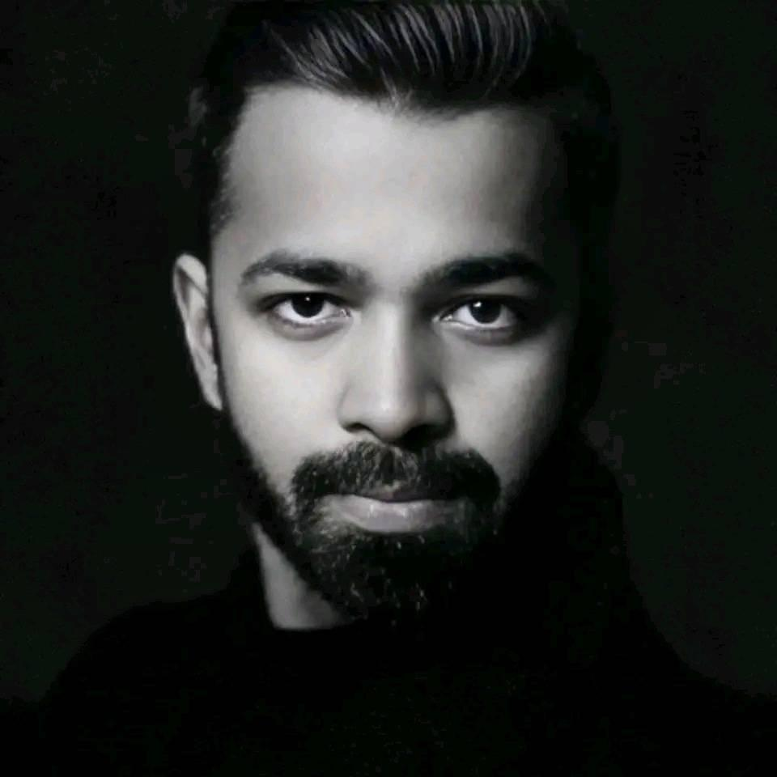

<div class="row flex-column-reverse flex-md-row py-2">
    <div class="col-md-8" id="bio">
        <h1>Ranjith Jaganathan</h1>
        <p>
            My research is interdisciplinary and broadly lies at the intersection of computational modeling, machine learning, visual perception, and cognitive neuroscience.
        </p>
        <p>
            I have worked in the areas of visual scene perception, emotional scene processing, visual word processing, and corpus-based psycholinguistics. 
        </p>
        <p>
            I am also interested in dementia research, particularly the potential of using brain imaging techniques and ML algorithms to identify early biomarkers and indicators of dementia, which could help improve dementia diagnosis.
        </p>
        <p>
        <p style="text-align:center">
            <a target="_blank" href="https://mailhide.io/">Email</a> &nbsp;/&nbsp;
            <a href="https://github.com/">GitHub</a> &nbsp;/&nbsp;
            <a href="https://twitter.com/">Twitter</a> &nbsp;/&nbsp;
            <a href="https://scholar.google.com/citations?user=">Google Scholar</a> &nbsp;/&nbsp;
            <a href="https://www.linkedin.com/in/">LinkedIn </a>
        </p>
    </div>
    <div class="col-md-4" style="z-index:4;">
        
    </div>
</div>

{% include publications.html %}
